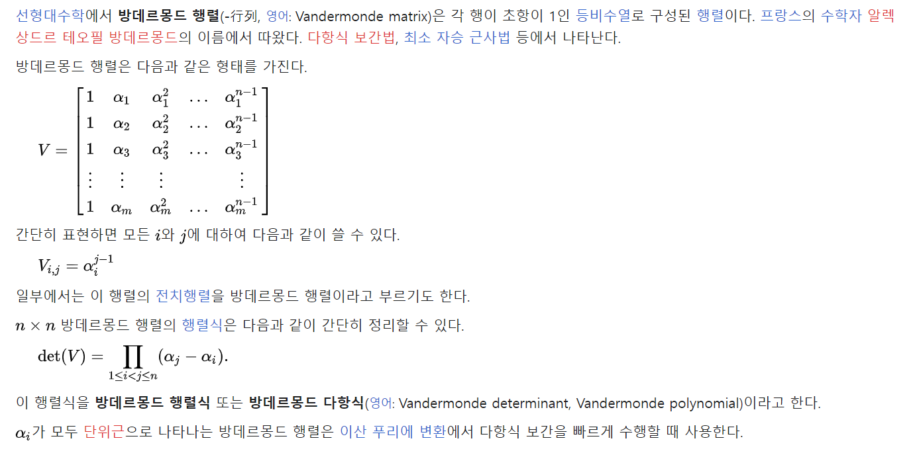

<!DOCTYPE html>
<html xmlns="http://www.w3.org/1999/xhtml" lang="en" xml:lang="en"><head>

<meta charset="utf-8">
<meta name="generator" content="quarto-1.2.335">

<meta name="viewport" content="width=device-width, initial-scale=1.0, user-scalable=yes">

<meta name="author" content="JiyunLim">
<meta name="dcterms.date" content="2023-07-15">

<title>Quarto-Blog - [CGSP] Chap 12.1: Random Graph Process</title>
<style>
code{white-space: pre-wrap;}
span.smallcaps{font-variant: small-caps;}
div.columns{display: flex; gap: min(4vw, 1.5em);}
div.column{flex: auto; overflow-x: auto;}
div.hanging-indent{margin-left: 1.5em; text-indent: -1.5em;}
ul.task-list{list-style: none;}
ul.task-list li input[type="checkbox"] {
  width: 0.8em;
  margin: 0 0.8em 0.2em -1.6em;
  vertical-align: middle;
}
</style>


<script src="../../../site_libs/quarto-nav/quarto-nav.js"></script>
<script src="../../../site_libs/quarto-nav/headroom.min.js"></script>
<script src="../../../site_libs/clipboard/clipboard.min.js"></script>
<script src="../../../site_libs/quarto-search/autocomplete.umd.js"></script>
<script src="../../../site_libs/quarto-search/fuse.min.js"></script>
<script src="../../../site_libs/quarto-search/quarto-search.js"></script>
<meta name="quarto:offset" content="../../../">
<script src="../../../site_libs/quarto-html/quarto.js"></script>
<script src="../../../site_libs/quarto-html/popper.min.js"></script>
<script src="../../../site_libs/quarto-html/tippy.umd.min.js"></script>
<script src="../../../site_libs/quarto-html/anchor.min.js"></script>
<link href="../../../site_libs/quarto-html/tippy.css" rel="stylesheet">
<link href="../../../site_libs/quarto-html/quarto-syntax-highlighting.css" rel="stylesheet" id="quarto-text-highlighting-styles">
<script src="../../../site_libs/bootstrap/bootstrap.min.js"></script>
<link href="../../../site_libs/bootstrap/bootstrap-icons.css" rel="stylesheet">
<link href="../../../site_libs/bootstrap/bootstrap.min.css" rel="stylesheet" id="quarto-bootstrap" data-mode="light">
<script id="quarto-search-options" type="application/json">{
  "location": "navbar",
  "copy-button": false,
  "collapse-after": 3,
  "panel-placement": "end",
  "type": "overlay",
  "limit": 20,
  "language": {
    "search-no-results-text": "No results",
    "search-matching-documents-text": "matching documents",
    "search-copy-link-title": "Copy link to search",
    "search-hide-matches-text": "Hide additional matches",
    "search-more-match-text": "more match in this document",
    "search-more-matches-text": "more matches in this document",
    "search-clear-button-title": "Clear",
    "search-detached-cancel-button-title": "Cancel",
    "search-submit-button-title": "Submit"
  }
}</script>

  <script src="https://cdn.jsdelivr.net/npm/mathjax@3/es5/tex-chtml-full.js" type="text/javascript"></script>

<link rel="stylesheet" href="../../../styles.css">
</head>

<body class="nav-sidebar docked nav-fixed">

<div id="quarto-search-results"></div>
  <header id="quarto-header" class="headroom fixed-top">
    <nav class="navbar navbar-expand-lg navbar-dark ">
      <div class="navbar-container container-fluid">
      <div class="navbar-brand-container">
    <a class="navbar-brand" href="../../../index.html">
    <span class="navbar-title">Quarto-Blog</span>
    </a>
  </div>
          <button class="navbar-toggler" type="button" data-bs-toggle="collapse" data-bs-target="#navbarCollapse" aria-controls="navbarCollapse" aria-expanded="false" aria-label="Toggle navigation" onclick="if (window.quartoToggleHeadroom) { window.quartoToggleHeadroom(); }">
  <span class="navbar-toggler-icon"></span>
</button>
          <div class="collapse navbar-collapse" id="navbarCollapse">
            <ul class="navbar-nav navbar-nav-scroll ms-auto">
  <li class="nav-item">
    <a class="nav-link" href="../../../about.html">
 <span class="menu-text">About</span></a>
  </li>  
  <li class="nav-item compact">
    <a class="nav-link" href="https://github.com/pinkocto"><i class="bi bi-github" role="img">
</i> 
 <span class="menu-text"></span></a>
  </li>  
</ul>
              <div id="quarto-search" class="" title="Search"></div>
          </div> <!-- /navcollapse -->
      </div> <!-- /container-fluid -->
    </nav>
  <nav class="quarto-secondary-nav" data-bs-toggle="collapse" data-bs-target="#quarto-sidebar" aria-controls="quarto-sidebar" aria-expanded="false" aria-label="Toggle sidebar navigation" onclick="if (window.quartoToggleHeadroom) { window.quartoToggleHeadroom(); }">
    <div class="container-fluid d-flex justify-content-between">
      <h1 class="quarto-secondary-nav-title"><strong>[CGSP]</strong> Chap 12.1: Random Graph Process</h1>
      <button type="button" class="quarto-btn-toggle btn" aria-label="Show secondary navigation">
        <i class="bi bi-chevron-right"></i>
      </button>
    </div>
  </nav>
</header>
<!-- content -->
<header id="title-block-header" class="quarto-title-block default page-columns page-full">
  <div class="quarto-title-banner page-columns page-full">
    <div class="quarto-title column-body">
      <h1 class="title d-none d-lg-block"><strong>[CGSP]</strong> Chap 12.1: Random Graph Process</h1>
                      </div>
  </div>
    
  
  <div class="quarto-title-meta">

      <div>
      <div class="quarto-title-meta-heading">Author</div>
      <div class="quarto-title-meta-contents">
               <p>JiyunLim </p>
            </div>
    </div>
      
      <div>
      <div class="quarto-title-meta-heading">Published</div>
      <div class="quarto-title-meta-contents">
        <p class="date">July 15, 2023</p>
      </div>
    </div>
    
      
    </div>
    
  
  </header><div id="quarto-content" class="quarto-container page-columns page-rows-contents page-layout-article page-navbar">
<!-- sidebar -->
  <nav id="quarto-sidebar" class="sidebar collapse sidebar-navigation docked overflow-auto">
      <div class="mt-2 flex-shrink-0 align-items-center">
        <div class="sidebar-search">
        <div id="quarto-search" class="" title="Search"></div>
        </div>
      </div>
    <div class="sidebar-menu-container"> 
    <ul class="list-unstyled mt-1">
        <li class="sidebar-item">
  <div class="sidebar-item-container"> 
  <a href="../../../1_ip2022.html" class="sidebar-item-text sidebar-link">IP2022</a>
  </div>
</li>
        <li class="sidebar-item">
  <div class="sidebar-item-container"> 
  <a href="../../../2_dv2022.html" class="sidebar-item-text sidebar-link">DV2022</a>
  </div>
</li>
        <li class="sidebar-item">
  <div class="sidebar-item-container"> 
  <a href="../../../3_stbda2022.html" class="sidebar-item-text sidebar-link">STBDA2022</a>
  </div>
</li>
        <li class="sidebar-item">
  <div class="sidebar-item-container"> 
  <a href="../../../4_ts2023.html" class="sidebar-item-text sidebar-link">TS2023</a>
  </div>
</li>
        <li class="sidebar-item">
  <div class="sidebar-item-container"> 
  <a href="../../../5_study.html" class="sidebar-item-text sidebar-link">STUDY</a>
  </div>
</li>
        <li class="sidebar-item">
  <div class="sidebar-item-container"> 
  <a href="../../../6_note.html" class="sidebar-item-text sidebar-link">NOTE</a>
  </div>
</li>
    </ul>
    </div>
</nav>
<!-- margin-sidebar -->
    <div id="quarto-margin-sidebar" class="sidebar margin-sidebar">
        <nav id="TOC" role="doc-toc" class="toc-active">
    <h2 id="toc-title">On this page</h2>
   
  <ul>
  <li><a href="#random-graph-process" id="toc-random-graph-process" class="nav-link active" data-scroll-target="#random-graph-process">12.1 Random Graph Process</a>
  <ul class="collapse">
  <li><a href="#introduction" id="toc-introduction" class="nav-link" data-scroll-target="#introduction">12.1.1 Introduction</a></li>
  <li><a href="#notation" id="toc-notation" class="nav-link" data-scroll-target="#notation">12.1.3 Notation</a></li>
  </ul></li>
  <li><a href="#to-read" id="toc-to-read" class="nav-link" data-scroll-target="#to-read">To read</a></li>
  </ul>
</nav>
    </div>
<!-- main -->
<main class="content quarto-banner-title-block" id="quarto-document-content">


<section id="random-graph-process" class="level1">
<h1>12.1 Random Graph Process</h1>
<section id="introduction" class="level2">
<h2 class="anchored" data-anchor-id="introduction">12.1.1 Introduction</h2>
<p>Most of the tools in graph signal processing are deterministic in nature, e.g., graph signal denoising using diffusion [1], sampling and reconstruction of graph signals [2–7], graph filter design [8–11], and so on.</p>
<blockquote class="blockquote">
<p>그래프 신호 처리의 대부분의 도구는 본질적으로 결정론적입니다. 예를 들어 확산 [1]을 사용한 그래프 신호 노이즈 제거, 그래프 신호 샘플링 및 재구성 [2-7], 그래프 필터 설계 [8-11] 등입니다.</p>
</blockquote>
<p>Only recently, statistical signal processing methods tailored to graph signals have been introduced. As we know from classical signal processing focusing on spatiotemporal signals, statistical methods allow one to take statistical information into account when designing optimal sampling and reconstruction schemes, e.g., Wiener filtering for denoising, interpolation, prediction, and so on [12]. &gt; 최근에서야 그래프 신호에 맞춘 통계적 신호 처리 방법이 도입되었습니다. 시공간 신호에 초점을 맞춘 고전적인 신호 처리를 통해 우리가 알고 있듯이, 통계학적 방법을 사용하면 최적 샘플링 및 재구성 체계를 설계할 때 통계 정보를 고려할 수 있습니다(예: 노이즈 제거, 보간, 예측 등을 위한 Wiener 필터링) [12].</p>
<ul>
<li>Wiener filtering?</li>
</ul>
<p>This generally leads to a better average performance compared to deterministic methods. Key to the majority of statistical methods is the concept of weak stationarity, which means that the first- and second-order statistics of the random process do not change over space and/or time. &gt; 이는 일반적으로 결정론적 방법에 비해 더 나은 평균 성능으로 이어집니다. 대부분의 통계적 방법의 핵심은 약정상성의 개념이며, 이는 랜덤 프로세스의 1차 및 2차 통계량이 공간 및/또는 시간에 따라 변하지 않음을 의미합니다.</p>
<p>The extension of this concept to graph signals is not trivial due to the fact that these signals have an irregular structure, which is generally characterized by a so-called graph shift (a generalization of the shift in time and/or space). &gt; 이 개념을 그래프 신호로 확장하는 것은 일반적으로 소위 그래프 이동(시간 및/또는 공간 이동의 일반화)으로 특징지어지는 불규칙한 구조를 가지고 있기 때문에 사소한 것은 아닙니다.</p>
<p>This is what will be discussed in the current chapter. The first works discussing stationary graph processes observe that in contrast to a shift in time and/or space, a graph shift is not energy preserving [13,14]. Hence, these papers base their definition of a weakly stationary graph process on a new isometric graph shift. &gt; 이것이 이번 장에서 논의될 내용입니다. 정상 그래프 프로세스를 논의하는 첫 번째 연구에서는 시공간의 변화와 달리 그래프 이동이 에너지 보존이 아님을 관찰했습니다 [13,14]. 따라서, 이 논문들은 새로운 아이소메트릭 그래프 이동을 기반으로 약정상 그래프 프로세스의 정의를 기반으로 합니다.</p>
<ul>
<li>아이소메트릭 그래프?</li>
</ul>
<p>However, this new shift cannot be carried out by means of local operations and hence the connection between stationarity and locality is lost. Therefore, in this chapter, we present definitions based on the original graph shift, allowing for stationarity tests and estimation schemes based on local information. Stationary graph processes are also characterized by a power spectral density (PSD) and this chapter provides a rigorous treatment of various PSD estimators, including nonparametric and parametric methods. Our treatment of stationary graph processes is based on the comprehensive study presented in [15]. Graph stationarity was also studied in [16], where the analysis is carried out using the Laplacian matrix as the graph shift operator. &gt; 그러나 이 새로운 이동은 local operation을 통해 수행될 수 없으므로 정상성과 지역성 사이의 연결이 손실됩니다. 따라서 이 장에서는 원래 그래프 이동을 기반으로 한 정의를 제시하여 로컬 정보를 기반으로 한 정상성 테스트 및 추정 체계를 허용합니다. 정상 그래프 프로세스는 또한 파워 스펙트럼 밀도(PSD)로 특징지어지며 이 장에서는 비모수 및 파라메트릭 방법을 포함한 다양한 PSD 추정기에 대한 엄격한 처리를 제공합니다. 정상 그래프 프로세스에 대한 내용은 [15]에 제시된 포괄적인 연구를 기반으로 합니다. 그래프 정상성은 또한 [16]에서 연구되었으며, 분석은 그래프 이동 연산자로 라플라스 행렬을 사용하여 수행됩니다.</p>
<p>In this chapter, the proposed framework is also extended to random processes that are jointly stationary in the time and vertex domain [17]. This paves the way for statistical tools for random processes over two domains: the regular time domain and the irregular graph domain. &gt; 이 장에서, 제안된 프레임워크는 또한 시간 및 정점 영역에서 공동으로 결합 정상 랜덤 프로세스로 확장됩니다 [17]. 이는 정규 시간 도메인과 비정규 그래프 도메인의 두 도메인에 걸친 랜덤 프로세스에 대한 통계 도구의 길을 열어줍니다.</p>
<p>The field of compressive sensing has recently been extended to compressive covariance sensing [18], which is based on the idea that the covariance matrix or PSD of a spatiotemporal process can be estimated from compressed measurements without any prior assumptions on sparsity or smoothness. A special case of compressive covariance sensing occurs when the compression is realized by subsampling (below the Nyquist rate), also known as sparse covariance sensing. &gt; 압축 감지 분야는 최근 압축 공분산 감지[18]로 확장되었으며, 이는 시공간 프로세스의 공분산 행렬 또는 PSD라는 아이디어에 기초합니다 희소성 또는 평활도에 대한 사전 가정 없이 압축 측정을 통해 추정할 수 있습니다. 압축 공분산 감지의 특별한 경우는 압축이 희소 공분산 감지라고도 하는 하위 샘플링(나이퀴스트 속도하에서)에 의해 실현될 때 발생합니다.</p>
<p>This allows one to design statistical signal processing tools from only a subset of measurements. The last part of the chapter explains how these ideas can be extended to random graph processes, where the covariance matrix does not have any apparent structure, as for spatiotemporal processes [19]. We demonstrate how the covariance matrix—and thus the PSD—of a graph process can be estimated from a subset of the nodes without the use of priors. &gt; 이를 통해 일부 측정치에서만 통계 신호 처리 도구를 설계할 수 있습니다. 이 장의 마지막 부분에서는 시공간 프로세스와 같이 공분산 행렬이 명백한 구조를 갖지 않는 랜덤 그래프 프로세스로 이러한 아이디어를 확장하는 방법을 설명합니다 [19]. 그래프 프로세스의 공분산 행렬, 즉 PSD가 사전 사용 없이 노드의 하위 집합에서 추정되는 방법을 보여줍니다.</p>
<p>Again, nonparametric as well as parametric methods are considered and we additionally show how to select the nodes in a greedy fashion. &gt; 다시, 비모수 및 파라메트릭 방법이 고려되고 우리는 그리디 방식으로 노드를 선택하는 방법을 추가로 보여줍니다.</p>
</section>
<section id="notation" class="level2">
<h2 class="anchored" data-anchor-id="notation">12.1.3 Notation</h2>
<p>Let <span class="math inline">\(\cal{G} = (\cal{N} , \cal{E})\)</span> be a directed graph or network with a set of <span class="math inline">\(N\)</span> nodes <span class="math inline">\(\cal{N}\)</span> and directed edges E such that <span class="math inline">\((i, j) \in \cal{E}\)</span> if there exists an edge from node <span class="math inline">\(i\)</span> to node <span class="math inline">\(j\)</span>. We associate with <span class="math inline">\(\cal{G}\)</span> the graph shift operator (GSO) <span class="math inline">\(\boldsymbol{S}\)</span>, defined as an <span class="math inline">\(N \times N\)</span> matrix whose entry <span class="math inline">\(\boldsymbol{S}_{j,i} = 0\)</span> only if <span class="math inline">\(i = j\)</span> or if <span class="math inline">\((i, j) \in \cal{E}\)</span> [9,20]. The sparsity pattern of <span class="math inline">\(\boldsymbol{S}\)</span> captures the local structure of <span class="math inline">\(\cal{G}\)</span>, but we make no specific assumptions on the values of the nonzero entries of <span class="math inline">\(\boldsymbol{S}\)</span>; hence the GSO can represent the adjacency matrix, the Laplacian, or other graph-related matrices.</p>
<p>In this chapter we assume that <span class="math inline">\(\boldsymbol{S}\)</span> is normal to guarantee the existence of a unitary matrix<a href="#fn1" class="footnote-ref" id="fnref1" role="doc-noteref"><sup>1</sup></a> <span class="math inline">\(\mathbf{V} = [\mathbf{v}_1, \mathbf{v}_2, \dots , \mathbf{v}_N]\)</span> and a diagonal matrix <span class="math inline">\(\mathbf{\Lambda}\)</span> such that <span class="math inline">\(\boldsymbol{S} = \mathbf{V}\mathbf{\Lambda} \mathbf{V}^{H}\)</span>. We use <span class="math inline">\(\mathbf{x} = [\mathbf{x}_1, \dots , \mathbf{x}_N]^\top \in \mathbb{R}^n\)</span> to denote a generic graph signal and <span class="math inline">\(\tilde{\mathbf{x}} := \mathbf{V}^{H}\mathbf{x}\)</span> to denote its frequency representation, with <span class="math inline">\(\mathbf{V}^{H}\)</span> being the graph Fourier transform (GFT) [9]. Finally, we use <span class="math inline">\(\boldsymbol{H} : \mathbb{R}^N \to \mathbb{R}^N\)</span> to denote a linear shift-invariant graph filter of the form where <span class="math inline">\(\tilde{\mathbf{h}}\)</span> denotes the frequency response of the filter <span class="math inline">\(\mathbf{H}, \mathbf{\Psi_L}\)</span> is an <span class="math inline">\(N \times L\)</span> Vandermonde matrix with entries <span class="math inline">\(\Psi_{k,l} = \lambda_k^{l-1}\)</span>, and <span class="math inline">\(\mathbf{h}\)</span> is a vector collecting the polynomial coefficients.</p>
<p>The notation <span class="math inline">\(\circ, \otimes\)</span>, and <span class="math inline">\(\odot\)</span> denote the elementwise, Kronecker, and Khatri-Rao matrix products, respectively. The notation <span class="math inline">\(\oplus\)</span> stands for the Kronecker sum.</p>
<ul>
<li><span class="math inline">\(\boldsymbol{S}\)</span> : graph shift operator (고유분해가능 // <span class="math inline">\({\bf S} = {\bf V}{\bf \Lambda}{\bf V}^{H}\)</span>)</li>
<li><span class="math inline">\({\bf x} = [{\bf x_1}, {\bf x_2},\dots, {\bf x_N}]^\top\)</span> : generic graph signal</li>
<li><span class="math inline">\({\tilde{\bf x}}:= {\bf V}^{H}{\bf x}\)</span> : frequency representation</li>
<li><span class="math inline">\({\bf V}^H\)</span> : graph Fourier transform (GFT)</li>
<li><span class="math inline">\({\bf H}: {\mathbb{R}^N} \to {\mathbb{R}^N}\)</span> : linear shift-invariant graph filter</li>
<li><span class="math inline">\(\tilde{h}\)</span>: frequency response of filter <span class="math inline">\(\bf {H}\)</span></li>
<li><span class="math inline">\({\bf \Psi_L}\)</span>: <span class="math inline">\(N\times L\)</span> Vandermonde matrix with entries <span class="math inline">\(\Psi_{k,l} = \lambda_k^{l-1}\)</span></li>
<li><span class="math inline">\({\bf h}\)</span> : vector collecting the polynomial coefficients.</li>
</ul>
<div class="callout-tip callout callout-style-default callout-captioned">
<div class="callout-header d-flex align-content-center">
<div class="callout-icon-container">
<i class="callout-icon"></i>
</div>
<div class="callout-caption-container flex-fill">
Tip
</div>
</div>
<div class="callout-body-container callout-body" title="normal GSO">
<p>즉 <span class="math inline">\({\bf S}\)</span>의 고유벡터 행렬이 존재 안할 수도 있다. 따라서 GSO <span class="math inline">\({\bf S}\)</span>가 고유분해가능하다는 조건이 추가적으로 필요한데 이러한 조건을 만족하는 GSO를 normal GSO라고 부른다. <span class="math display">\[{\bf S} = {\bf V}{\bf \Lambda}{\bf V}^{H}\]</span></p>
</div>
</div>
<p><span class="math display">\[{\bf H} = \sum_{l=0}^{L-1} h_l{\bf S}^l={\bf V}\text{diag}({\tilde{\bf h}}){\bf V}^H = {\bf V}\text{diag}({\bf \Psi_L}{\bf h}){\bf V}^H\]</span></p>
<p><code>-</code> 방데르몽드 행렬 (Vandermonde matrix)</p>
<p></p>
<hr>
</section>
</section>
<section id="to-read" class="level1">
<h1>To read</h1>
<ul>
<li>Unitary Shift Operators on a Graph
<ul>
<li><a href="https://arxiv.org/pdf/1909.05767v3.pdf" class="uri">https://arxiv.org/pdf/1909.05767v3.pdf</a></li>
</ul></li>
<li>On the Shift Operator, Graph Frequency, and Optimal Filtering in Graph Signal Processing
<ul>
<li><a href="https://ieeexplore.ieee.org/stamp/stamp.jsp?tp=&amp;arnumber=8038007" class="uri">https://ieeexplore.ieee.org/stamp/stamp.jsp?tp=&amp;arnumber=8038007</a></li>
</ul></li>
</ul>


</section>


<div id="quarto-appendix" class="default"><section id="footnotes" class="footnotes footnotes-end-of-document" role="doc-endnotes"><h2 class="anchored quarto-appendix-heading">Footnotes</h2>

<ol>
<li id="fn1"><p>켤레 전치가 역행렬과 같은 복소수 정사각 행렬<a href="#fnref1" class="footnote-back" role="doc-backlink">↩︎</a></p></li>
</ol>
</section></div></main> <!-- /main -->
<script id="quarto-html-after-body" type="application/javascript">
window.document.addEventListener("DOMContentLoaded", function (event) {
  const toggleBodyColorMode = (bsSheetEl) => {
    const mode = bsSheetEl.getAttribute("data-mode");
    const bodyEl = window.document.querySelector("body");
    if (mode === "dark") {
      bodyEl.classList.add("quarto-dark");
      bodyEl.classList.remove("quarto-light");
    } else {
      bodyEl.classList.add("quarto-light");
      bodyEl.classList.remove("quarto-dark");
    }
  }
  const toggleBodyColorPrimary = () => {
    const bsSheetEl = window.document.querySelector("link#quarto-bootstrap");
    if (bsSheetEl) {
      toggleBodyColorMode(bsSheetEl);
    }
  }
  toggleBodyColorPrimary();  
  const icon = "";
  const anchorJS = new window.AnchorJS();
  anchorJS.options = {
    placement: 'right',
    icon: icon
  };
  anchorJS.add('.anchored');
  const clipboard = new window.ClipboardJS('.code-copy-button', {
    target: function(trigger) {
      return trigger.previousElementSibling;
    }
  });
  clipboard.on('success', function(e) {
    // button target
    const button = e.trigger;
    // don't keep focus
    button.blur();
    // flash "checked"
    button.classList.add('code-copy-button-checked');
    var currentTitle = button.getAttribute("title");
    button.setAttribute("title", "Copied!");
    let tooltip;
    if (window.bootstrap) {
      button.setAttribute("data-bs-toggle", "tooltip");
      button.setAttribute("data-bs-placement", "left");
      button.setAttribute("data-bs-title", "Copied!");
      tooltip = new bootstrap.Tooltip(button, 
        { trigger: "manual", 
          customClass: "code-copy-button-tooltip",
          offset: [0, -8]});
      tooltip.show();    
    }
    setTimeout(function() {
      if (tooltip) {
        tooltip.hide();
        button.removeAttribute("data-bs-title");
        button.removeAttribute("data-bs-toggle");
        button.removeAttribute("data-bs-placement");
      }
      button.setAttribute("title", currentTitle);
      button.classList.remove('code-copy-button-checked');
    }, 1000);
    // clear code selection
    e.clearSelection();
  });
  function tippyHover(el, contentFn) {
    const config = {
      allowHTML: true,
      content: contentFn,
      maxWidth: 500,
      delay: 100,
      arrow: false,
      appendTo: function(el) {
          return el.parentElement;
      },
      interactive: true,
      interactiveBorder: 10,
      theme: 'quarto',
      placement: 'bottom-start'
    };
    window.tippy(el, config); 
  }
  const noterefs = window.document.querySelectorAll('a[role="doc-noteref"]');
  for (var i=0; i<noterefs.length; i++) {
    const ref = noterefs[i];
    tippyHover(ref, function() {
      // use id or data attribute instead here
      let href = ref.getAttribute('data-footnote-href') || ref.getAttribute('href');
      try { href = new URL(href).hash; } catch {}
      const id = href.replace(/^#\/?/, "");
      const note = window.document.getElementById(id);
      return note.innerHTML;
    });
  }
  const findCites = (el) => {
    const parentEl = el.parentElement;
    if (parentEl) {
      const cites = parentEl.dataset.cites;
      if (cites) {
        return {
          el,
          cites: cites.split(' ')
        };
      } else {
        return findCites(el.parentElement)
      }
    } else {
      return undefined;
    }
  };
  var bibliorefs = window.document.querySelectorAll('a[role="doc-biblioref"]');
  for (var i=0; i<bibliorefs.length; i++) {
    const ref = bibliorefs[i];
    const citeInfo = findCites(ref);
    if (citeInfo) {
      tippyHover(citeInfo.el, function() {
        var popup = window.document.createElement('div');
        citeInfo.cites.forEach(function(cite) {
          var citeDiv = window.document.createElement('div');
          citeDiv.classList.add('hanging-indent');
          citeDiv.classList.add('csl-entry');
          var biblioDiv = window.document.getElementById('ref-' + cite);
          if (biblioDiv) {
            citeDiv.innerHTML = biblioDiv.innerHTML;
          }
          popup.appendChild(citeDiv);
        });
        return popup.innerHTML;
      });
    }
  }
});
</script>
</div> <!-- /content -->


</body></html>